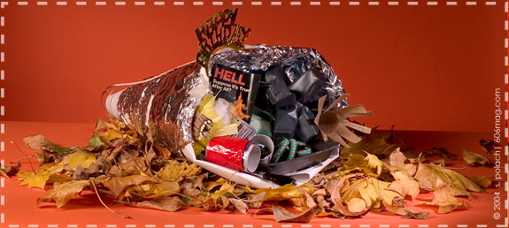

|
|
|
|
|
Each year, towards the end of November, Americans gather their families, their friends and their thankfulness for the past and hope for the future to enjoy an elaborate feast together. It is a time of celebration and joy, a time to take humble pride in our accomplishments and our relationships. Just like the Pilgrims and Indians gave thanks, so should we. We have such a powerful country that we can do whatever we want. We have a minimum wage and some people have health care. We have a great highway system so that we can drive really big cars all over the enormous land we have been blessed with. We have the greenest and best manicured lawns. We have so much to be thankful for, and only one day to show it. So get out your crayons, your scissors, your markers and glue, and spend some quality time with your thankfulness. These arts and crafts projects will surely get you in the mood. |
 |
|
|
There's something for everyone in this delicate, hand-made centerpiece. While serving as a beautiful accent to your Thanksgiving dinner, you can use the individual parts to help you with the meal.
Perfect for a large or small area, a counter or coffee table, this project will spice up your dinner quite nicely. We've constructed one as an example, but you should feel free to dig through your own (or your neighbor's) trash to make your cornucopia really unique and special. Have some fun with it!
Suggested Materials:
- Foil around the outside (for leftovers)
- Stereo wire (in case the party moves outside the bounds of the music)
- A flower made out of a matchbook (for candles or to light your stove)
- A lighter (for candles or in case a guest is a smoker)
- A flower made from a feminine hygiene product (a female guest might appreciate this — smells great too!)
- Light reading material on going to hell (sometimes there's a lull in the conversation)
- A flower made of a cardboard toilet paper roll (just for looks)
- A happy birthday sign (for holiday economization)
- A flower made out of a plastic seedling container (hopeful anticipation of spring)
- Styrofoam platter (perhaps the host runs out of plates)
- Paintbrushes (for basting)
- Bungee cord (makeshift suspender or belt expander)
- Tissues in plastic bags (the food might not agree with everyone)
- Twine (emergency handcuffs for those unruly guests)
|
|
| comments: giving thanks |
|
subject: this is tremendous
date: 11.01.2004
name: missy
comment:
guys, this....is absolutely brilliant. |
| |
subject: Alt-history coloring book
date: 11.01.2004
name: Pete
comment:
Though I definitely want my four-year-old to EVENTUALLY read "Bury My Heart at Wounded Knee", I think the coloring book might traumatize her at the moment. |
| |
subject: Wow
date: 11.03.2004
name: Best Issue Yet
comment:
I just have to say, this article, and I think every other one I have read so far this month are awesome. You guys really did a great job this month!! |
| |
subject: Proud to be an American....
date: 11.05.2004
name: Phil
comment:
Forget that. I'm Proud to be a Six-o-six reader! |
| |
subject: the sad truth
date: 11.09.2004
name: will
comment:
as good as this is, it rings remarkably (and sadly) so so true - even today |
| |
subject: Loving Indians, or just hating Americans?
date: 03.11.2005
name: steve doetsch
comment:
This art is neither brilliant nor original. It is the product of a mind that is the product of the culture. Contemporary mores have justified the defamation of our American heritage, thus the producers of this art shamelessly and ignorantly propagate half truths. These pages neither uphold the majesty of the American Indian heritage, nor provide any reasonable perspective of our common American ancestry.
This art reaches no higher than hate. It is a work of ignorance showing no compassion for the American Indian and only contempt for contemporary American tradition. While the rest of "sixosix" shares useful, fun, and thoughtful commentary, this page offers nothing but cheap sophomoric sarcasm.
C'mon guys, you can do better than this! This Thanksgiving let's celebrate the heritage of the American Indian, join with our families in being thankful for the lives we now live, and learn from the past so as not to repeat its mistakes.
"Neither irony or sarcasm is argument."
Samuel Butler |
| |